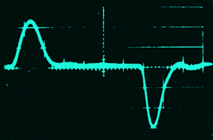

THE LILLY WAVE
Electrical Stimulation of the Brain
The goal was to find an electric current waveform with which animals could be stimulated through implanted electrodes for several hours per day for several months without causing irreversible changes in threshold by the passage of current through the tissue.
Many waveforms, including 60-cps. sine-wave current could apparently be used safely for these limited schedules of stimulation. They could not be used for the intensive, long-term schedule of chronic stimulation. Electric current passed through the brain can cause at least two distinct types of injury: thermal and electrolytic.
The technical problem in chronic brain stimulation is to stay above the excitatory threshold and below the injury threshold in the neuronal system under consideration. This result can be achieved most easily by the proper choice of waveforms and their time courses; and less easily by the choice of the range of repetition frequencies and train durations.
The previous wave forms used in neurophysiology and in neurosurgery injured the neurons when unidirectional current passed through the brain. Dr. Lilly developed a new electrical wave form to balance the current, first in one direction and then, after a brief interval, in the other. Thus ions moving in the neurons would first be pushed one way and then quickly the other way, stimulating the neurons and leaving the ions in their former positions within the neurons. This new wave form was called a balanced bidirectional pulse pair, or the Lilly Wave. Microscopic studies of brains stimulated with this balanced pulse pair showed that there was no injury of the neuronai networks from this kind of stimulation.
